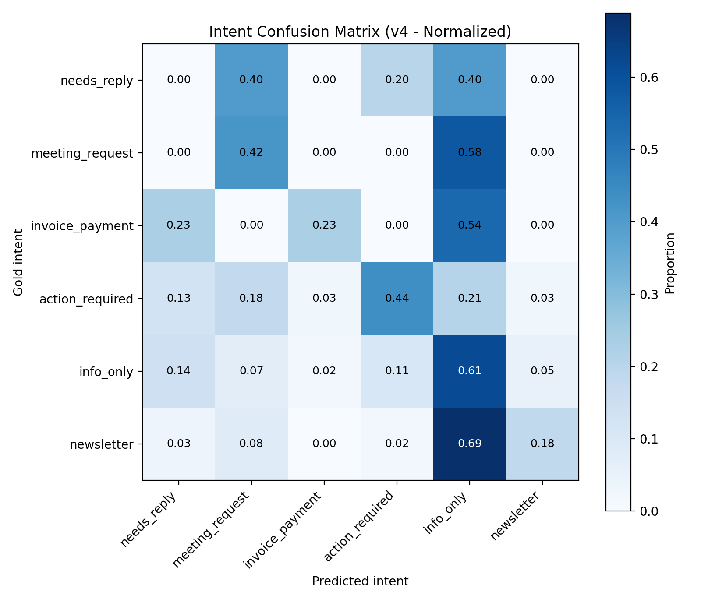

← Back to home
LLM Inbox Action Copilot
Focus: Local-first email triage using large language
models to detect intent and extract action.
Built a local LLM system that analyzes my email inbox data to identify
which messages require action and what type of action they involve (e.g.
meetings, invoices, replies, or tasks).
The project focuses on system design, evaluation, and error analysis
rather just prompt engineering, and explores how architectural choices
affect reliability when applying LLMs to everyday workflows like emails.
The limits of prompt-only intent classification were also investigated.
Ongoing extensions to the project: Retrieval-Augmented
Generation and agent-based workflows
What I did
-
Parsed real .eml email files exported from my inbox using Thunderbird
-
Built a robust HTML-to-text cleaning pipeline and extracted only the
latest message in email threads
-
Designed a weak-labeling system using heuristic rules to bootstrap
intent and action labels
-
Created a custom Streamlit labeling UI to manually annotate a gold
dataset
-
Defined intent categories based on user workflow, not just email content
-
Implemented local LLM inference using Ollama with strict JSON outputs
- Evaluated multiple LLM architectures:
- Single-stage intent + action classification
- Stricter prompt-based decision rules
- Two-stage pipelines (action detection → intent classification)
- Confidence-gated routing to balance precision and recall
-
Performed detailed error analysis using confusion matrices and
precision/recall metrics
-
Iterated on system design based on empirical findings rather than model
swapping
Outputs
- Cleaned, structured email dataset derived from real inbox data
- Weakly labeled dataset used for sampling and exploration
- Gold-labeled dataset created via a custom annotation interface
- Local LLM pipeline for:
- Action detection
- Intent classification
- Quantitative evaluation results:
- Action detection precision, recall, and F1
- Intent accuracy and confusion matrices
-
Final confidence-aware triage system that mirrors real-world inbox
behavior
- Reproducible evaluation and experimentation framework

Confusion matrix of predicted LLM intents
Performance comparison across four LLM inbox triage architectures
| Version |
Architecture |
Action Precision |
Action Recall |
Action F1 |
Action Accuracy |
Intent Accuracy |
Key Trade-off |
| v1 |
Single-stage classification |
0.66 |
0.89 |
0.76 |
0.77 |
0.40 |
High recall, weak intent separation |
| v2 |
Stricter prompt rules |
0.82 |
0.39 |
0.53 |
0.72 |
0.48 |
Conservative action detection |
| v3 |
Two-stage pipeline |
0.44 |
0.98 |
0.61 |
0.48 |
0.28 |
Over-triggers actions |
| v4 |
Confidence-gated routing |
0.65 |
0.61 |
0.63 |
0.71 |
0.37 |
Balanced precision and recall |
Key insights
- LLMs are strong at detecting whether an email requires action
-
Classifying what kind of action is harder due to workflow ambiguity
-
Prompt tuning alone has diminishing returns for intent classification
-
Architectural decisions matter more than switching to larger models
-
Some inbox categories (e.g. receipts vs invoices, notifications vs
requests) are inherently ambiguous
The project is available and fully documented in this repository:
Code (GitHub)